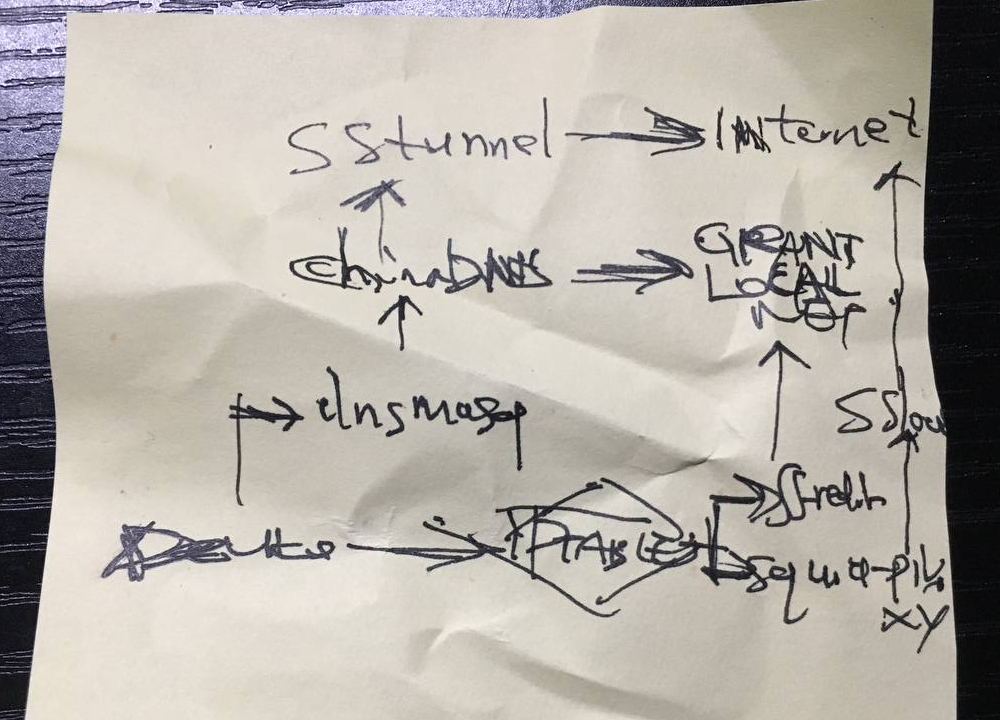

A Network System
2020
Year 2020, a friend of mine carried out an network experiemnt on his routers. I don't know the detail and motive of his endervor because I am a pretty dumb person. To me the experiement is just a show of putting a bunch of software together and make them cooperate, but it is marvelous, who would have thought one can replicate the complication of distributed system on a tiny router. Almostly simutaneously, have it occured to you that the driving force is also the gift of all human? After the experiement I asked my friend some questions and wrote the post, you may say this is an interview report.

The handwriting is almost unrecognizable, but it is an evident of the interview. I hope this helps for those who want to study distributed system and networking but can't afford expensive hardware except a cheap little embedded device.
Disable systemd-resolved
Disable systemd-resolved，then set dnsmasq to be the default DNS process。
sudo systemctl disable systemd-resolved
sudo systemctl stop systemd-resolved
remove resolv.conf
# ls -lh /etc/resolv.conf
lrwxrwxrwx 1 root root 39 Jan 15 2020 /etc/resolv.conf -> ../run/systemd/resolve/stub-resolv.conf
# rm /etc/resolv.conf
dnsmasq
Build DNS Cache Services with dnsmasq, whose upstreams includes 2 DNS:
- ChinaDNS
- FOREIGN DNS, accessed via ss-tunnel
apt install dnsmasq
Edit /etc/dnsmasq.conf
no-resolv
server=127.0.0.1#5353
5353 is ChinaDNS's listening port
start ChinaDNS, and then dnsmasq
systemctl start dnsmasq
ChinaDNS
wget https://github.com/shadowsocks/ChinaDNS/releases/download/1.3.2/chinadns-1.3.2.tar.gz
tar zxvf chinadns-1.3.2.tar.gz
./configure && make
cp ./src/chinadns /usr/local/bin/
mkdir -p /etc/antigfw
cp chnroute.txt /etc/antigfw
then launch it
chinadns -c /etc/antigfw/chnroute.txt -m -p 5353 -s 114.114.114.114,127.0.0.1:5300
where:
- 114.114.114.114 is a domestic DNS
- 127.0.0.1:5300 the way to foreign DNS
wrap it to a systemd service
[Install]
WantedBy=multi-user.target
[Unit]
Description="CHINADNS"
Wants=network.target network-online.target
After=network.target network-online.target
[Service]
Type=simple
ExecStart=/usr/local/bin/chinadns -c /etc/antigfw/chnroute.txt -m -p 5353 -s 114.114.114.114,127.0.0.1:5300
systemctl enable chinadns.service
systemctl start chinadns.service
ss-tunnel
ss-tunnel is used for port forwarding
create a config file: vim /etc/antigfw/ss-tunnel.json
see archlinux manpage for more information
{
"server": "?",
"server_port": ?,
"local_address": "0.0.0.0",
"local_port": 5300,
"password": "?",
"timeout": 300,
"method": "?",
"tunnel_address": "8.8.8.8:53"
"no_delay": true,
"reuse_port": true,
"mode": "tcp_and_udp"
}
ss-tunnel -c /etc/antigfw/ss-tunnel.json
test:
root@NanoPi-R2S:~# dig google.com @127.0.0.1 -p 5300
; <<>> DiG 9.11.3-1ubuntu1.14-Ubuntu <<>> google.com @127.0.0.1 -p 5300
;; global options: +cmd
;; Got answer:
;; ->>HEADER<<- opcode: QUERY, status: NOERROR, id: 26030
;; flags: qr rd ra; QUERY: 1, ANSWER: 1, AUTHORITY: 0, ADDITIONAL: 1
;; OPT PSEUDOSECTION:
; EDNS: version: 0, flags:; udp: 512
;; QUESTION SECTION:
;google.com. IN A
;; ANSWER SECTION:
google.com. 167 IN A 172.217.174.110
;; Query time: 63 msec
;; SERVER: 127.0.0.1#5300(127.0.0.1)
;; WHEN: Mon Mar 01 09:43:47 UTC 2021
;; MSG SIZE rcvd: 55
systemd service
[Install]
WantedBy=multi-user.target
[Unit]
Description="ss-tunnel"
Wants=network.target network-online.target
After=network.target network-online.target
[Service]
Type=simple
ExecStart=/usr/bin/ss-tunnel -c /etc/antigfw/ss-tunnel.json
Enable IP Forwarding
Edit /etc/sysctl.conf
net.ipv4.ip_forward=1
restart:
sysctl -p
ss-redir
# cat /etc/antigfw/ss-redir.json
{
"server": "?",
"server_port": ?,
"local_address": "0.0.0.0",
"local_port": 60080,
"password": "?",
"timeout": 300,
"method": "?",
"fast_open": true,
"mode": "tcp_and_udp"
}
systemd service
[Install]
WantedBy=multi-user.target
[Unit]
Description="ss-redir"
Wants=network.target network-online.target
After=network.target network-online.target
[Service]
Type=simple
ExecStart=/usr/bin/ss-redir -c /etc/antigfw/ss-redir.json
ipset, iptables, ip route
Update the list of domestic IPs
curl https://raw.githubusercontent.com/misakaio/chnroutes2/master/chnroutes.txt | egrep -v '^\s*$|^\s*#' > chnip.txt
ipset -N chnip hash:net
cat chnip.txt | xargs -n1 echo add chnip > chnip.ipset
ipset -R < chnip.ipset
# let it be permanent
ipset -S chnip > /etc/ipset.chnip
create file vim /etc/antigfw/tp.sh
set -euxo
##################### Configuration #####################
SS_SERVER_IP=
SS_SERVER_PORT=
SQUID_PORT=3128
PRIVOXY_PORT=8118
SS_LOCAL_PORT=1080
TROJAN_LOCAL_PORT=1090
SS_TUNNEL_PORT=5300
SS_REDIR_PORT=60080
#################### CLEAN UP #####################
# iptables
iptables -P INPUT ACCEPT
iptables -P FORWARD ACCEPT
iptables -P OUTPUT ACCEPT
iptables -t mangle -F OUTPUT
iptables -t mangle -F PREROUTING
iptables -t mangle -F SSREDIR || true
iptables -t mangle -X SSREDIR || true
# ipset
ipset flush chnip || true
ipset x chnip || true
# policy routing
ip rule del fwmark 0x2333/0x2333 lookup 100
ip route flush table 100
ip route flush cache
#################### ipset ####################
/sbin/ipset -N chnip hash:net
/sbin/ipset -R < /etc/antigfw/chnip.ipset
##################### SSREDIR #####################
iptables -t mangle -N SSREDIR
############################# PREROUTING ###########################################
# any traffic that is not meant to the system itself is then forwarded to SSREDIR
iptables -t mangle -A PREROUTING -p tcp -m addrtype ! --src-type LOCAL ! --dst-type LOCAL -j SSREDIR
iptables -t mangle -A PREROUTING -p udp -m addrtype ! --src-type LOCAL ! --dst-type LOCAL -j SSREDIR
# connection-mark -> packet-mark
# any traffic that is marked to be forwarded will not be examinated once more
iptables -t mangle -A SSREDIR -j CONNMARK --restore-mark
iptables -t mangle -A SSREDIR -m mark --mark 0x2333 -j RETURN
# ignore traffic sent to ss-server
iptables -t mangle -A SSREDIR -p tcp -d ${SS_SERVER_IP} -j RETURN
iptables -t mangle -A SSREDIR -p udp -d ${SS_SERVER_IP} -j RETURN
# let go of domestic traffic(in other words, packets whose destination is within "chnip")
iptables -t mangle -A SSREDIR -m set --match-set chnip dst -j RETURN
# ignore traffic sent to reserved addresses
iptables -t mangle -A SSREDIR -d 0.0.0.0/8 -j RETURN
iptables -t mangle -A SSREDIR -d 10.0.0.0/8 -j RETURN
iptables -t mangle -A SSREDIR -d 100.64.0.0/10 -j RETURN
iptables -t mangle -A SSREDIR -d 127.0.0.0/8 -j RETURN
iptables -t mangle -A SSREDIR -d 169.254.0.0/16 -j RETURN
iptables -t mangle -A SSREDIR -d 172.16.0.0/12 -j RETURN
iptables -t mangle -A SSREDIR -d 192.0.0.0/24 -j RETURN
iptables -t mangle -A SSREDIR -d 192.0.2.0/24 -j RETURN
iptables -t mangle -A SSREDIR -d 192.88.99.0/24 -j RETURN
iptables -t mangle -A SSREDIR -d 192.168.0.0/16 -j RETURN
iptables -t mangle -A SSREDIR -d 198.18.0.0/15 -j RETURN
iptables -t mangle -A SSREDIR -d 198.51.100.0/24 -j RETURN
iptables -t mangle -A SSREDIR -d 203.0.113.0/24 -j RETURN
iptables -t mangle -A SSREDIR -d 224.0.0.0/4 -j RETURN
iptables -t mangle -A SSREDIR -d 240.0.0.0/4 -j RETURN
iptables -t mangle -A SSREDIR -d 255.255.255.255/32 -j RETURN
# mark the first packet of the connection
iptables -t mangle -A SSREDIR -p tcp --syn -j MARK --set-mark 0x2333
iptables -t mangle -A SSREDIR -p udp -m conntrack --ctstate NEW -j MARK --set-mark 0x2333
# packet-mark -> connection-mark
iptables -t mangle -A SSREDIR -j CONNMARK --save-mark
# hand over the marked package to TPROXY for processing
# only usable from PREROUTING
iptables -t mangle -A PREROUTING -p tcp -m mark --mark 0x2333 -j TPROXY --on-port ${SS_REDIR_PORT}
iptables -t mangle -A PREROUTING -p udp -m mark --mark 0x2333 -j TPROXY --on-port ${SS_REDIR_PORT}
##################### OUTPUT #####################
# proxy the outgoing traffic from this machine;
# the outgoing traffic(whose src addr is local but dest addr is not)
# is forwarded to SSREDIR
iptables -t mangle -A OUTPUT -p tcp -m addrtype --src-type LOCAL ! --dst-type LOCAL -j SSREDIR
iptables -t mangle -A OUTPUT -p udp -m addrtype --src-type LOCAL ! --dst-type LOCAL -j SSREDIR
# Policy Routing
ip rule add fwmark 0x2333/0x2333 lookup 100
ip route add local 0.0.0.0/0 dev lo table 100
ip route flush cache
This is a oneshot systemd service
[Unit]
Description=Transparent Proxy Selector
#After=network.target
[Service]
Type=oneshot
ExecStart=/bin/bash /etc/antigfw/tp.sh
RemainAfterExit=true
StandardOutput=journal
[Install]
WantedBy=multi-user.target
Explicit Proxy
For some reason, my friend decided to support devices where only http proxy is available.
ss-local
╰─➤ apt install shadowsocks-libev
╰─➤ cat /etc/shadowsocks/1080.json
{
"server": "?",
"server_port": ?,
"local_address": "0.0.0.0",
"local_port": 1080,
"password": "?",
"timeout": 300,
"method": "?",
"fast_open": true,
"workers": 1
}
╰─➤ cat /etc/systemd/system/sslocal-1080.service
[Install]
WantedBy=multi-user.target
[Unit]
Description="SS"
Wants=network.target network-online.target
After=network.target network-online.target
[Service]
Type=simple
ExecStart=/usr/bin/ss-local -c /etc/shadowsocks/1080.json
╰─➤ systemctl enable sslocal-1080.service
╰─➤ systemctl start sslocal-1080.service
PRIVOXY
╰─➤ apt install privoxy
create file vim /etc/privoxy/config
listen-address 0.0.0.0:8118
forward-socks5 / 127.0.0.1:1080 .
test:
╰─➤ http_proxy=${r2s-ip}:8118 wget google.com
SQUID
download this script: gfwlist2dnsmasq to run it to generate a list of domains blocked by GFW.
./gfwlist2dnsmasq.sh -l -o gfw_domains.lst
Write a script to generate squid dstdomain:
import tldextract
import sys
gfw_domains = sys.argv[1]
output = sys.argv[2]
with open(gfw_domains) as f, open(output, "w") as w:
for d in f:
(subdomain, domain, suffix) = tldextract.extract(d)
if subdomain == '':
w.write(".{}.{}\n".format(domain, suffix))
It is cumbersome and boring to get it done.
#
# Recommended minimum configuration:
#
# Example rule allowing access from your local networks.
# Adapt to list your (internal) IP networks from where browsing
# should be allowed
acl local_clients src 0.0.0.1-0.255.255.255 # RFC 1122 "this" network (LAN)
acl local_clients src 10.0.0.0/8 # RFC 1918 local private network (LAN)
acl local_clients src 100.64.0.0/10 # RFC 6598 shared address space (CGN)
acl local_clients src 169.254.0.0/16 # RFC 3927 link-local (directly plugged) machines
acl local_clients src 172.16.0.0/12 # RFC 1918 local private network (LAN)
acl local_clients src 192.168.0.0/16 # RFC 1918 local private network (LAN)
acl local_clients src fc00::/7 # RFC 4193 local private network range
acl local_clients src fe80::/10 # RFC 4291 link-local (directly plugged) machines
acl SSL_ports port 443
acl Safe_ports port 80 # http
acl Safe_ports port 21 # ftp
acl Safe_ports port 443 # https
acl Safe_ports port 70 # gopher
acl Safe_ports port 210 # wais
acl Safe_ports port 1025-65535 # unregistered ports
acl Safe_ports port 280 # http-mgmt
acl Safe_ports port 488 # gss-http
acl Safe_ports port 591 # filemaker
acl Safe_ports port 777 # multiling http
acl CONNECT method CONNECT
acl local_servers dst 0.0.0.1-0.255.255.255 # RFC 1122 "this" network (LAN)
acl local_servers dst 10.0.0.0/8 # RFC 1918 local private network (LAN)
acl local_servers dst 100.64.0.0/10 # RFC 6598 shared address space (CGN)
acl local_servers dst 169.254.0.0/16 # RFC 3927 link-local (directly plugged) machines
acl local_servers dst 172.16.0.0/12 # RFC 1918 local private network (LAN)
acl local_servers dst 192.168.0.0/16 # RFC 1918 local private network (LAN)
acl local_servers dst fc00::/7 # RFC 4193 local private network range
acl local_servers dst fe80::/10 # RFC 4291 link-local (directly plugged) machines
# never cache local servers
cache deny local_servers
cache allow all
# privoxy
acl illegal_domains dstdomain "/etc/antigfw/gfw_domains.lst"
#acl illegal_domains dstdomain .www.google.com
cache_peer 127.0.0.1 parent 8118 0 no-query no-digest default name=privoxy
cache_peer_access privoxy allow
always_direct allow local_servers
always_direct allow !illegal_domains
never_direct allow all
#
# Recommended minimum Access Permission configuration:
#
# Deny requests to certain unsafe ports
http_access deny !Safe_ports
# Deny CONNECT to other than secure SSL ports
http_access deny CONNECT !SSL_ports
# Only allow cachemgr access from localhost
http_access allow localhost manager
http_access deny manager
# We strongly recommend the following be uncommented to protect innocent
# web applications running on the proxy server who think the only
# one who can access services on "localhost" is a local user
#http_access deny to_localhost
#
# INSERT YOUR OWN RULE(S) HERE TO ALLOW ACCESS FROM YOUR CLIENTS
#
# Example rule allowing access from your local networks.
# Adapt localnet in the ACL section to list your (internal) IP networks
# from where browsing should be allowed
http_access allow local_clients
http_access allow localhost
# And finally deny all other access to this proxy
http_access deny all
# Squid normally listens to port 3128
http_port 3128
# Uncomment and adjust the following to add a disk cache directory.
#cache_dir ufs /usr/local/squid/var/cache/squid 100 16 256
# Leave coredumps in the first cache dir
cache_effective_user proxy
coredump_dir /var/cache/squid
access_log /var/log/squid/access.log
#
# Add any of your own refresh_pattern entries above these.
#
refresh_pattern ^ftp: 1440 20% 10080
refresh_pattern ^gopher: 1440 0% 1440
refresh_pattern -i (/cgi-bin/|\?) 0 0% 0
refresh_pattern . 0 20% 4320
2022-02-10
People are filled with loathing of the distributed system which requires a lot of work to maintain. But they are also too lazy to change it. I am one of them. I always want to try overture but I don't have time.
Some thing I learn about port forwarding to resist the attack based on ports.
sudo iptables -t nat -A PREROUTING -p tcp --dport 12000:12010 -j REDIRECT --to-port 8388
sudo iptables -t nat -A PREROUTING -p udp --dport 12000:12010 -j REDIRECT --to-port 8388
2022-02-12
Well actually someone managed to use overture. Not me. I have broken my router by accidentally spilling water on it.
Overture
wget https://github.com/shawn1m/overture/releases/download/v1.8/overture-linux-arm64.zip
mkdir overture
unzip overture-linux-arm64.zip -d overture
create file `/etc/systemd/system/overture.service
[Unit]
Description=A customized DNS relay server
ConditionFileIsExecutable=/root/overture/overture-linux-arm64
[Service]
StartLimitInterval=5
StartLimitBurst=10
WorkingDirectory=/root/overture/
ExecStart=/root/overture/overture-linux-arm64 "-c" "/root/overture/config.yaml" "-l" "/root/overture/overture.log"
Restart=always
RestartSec=120
EnvironmentFile=-/etc/sysconfig/overture
[Install]
WantedBy=multi-user.target
Start service:
systemctl enable overture
systemctl start overture
Write a script(/root/overture/update.sh) to automatically update ip lists
#! /bin/bash
cd /root/overture
rm china_list.txt gfw_list.txt china_ip_list.txt
curl -s https://raw.githubusercontent.com/17mon/china_ip_list/master/china_ip_list.txt > china_ip_list.txt
curl -s https://raw.githubusercontent.com/felixonmars/dnsmasq-china-list/master/accelerated-domains.china.conf | sed 's/server=\///g;s/\/114.114.114.114//g' > china_list1.txt
curl -s https://raw.githubusercontent.com/hq450/fancyss/master/rules/WhiteList_new.txt | sed 's/Server=\///g;s/\///g' > china_list2.txt
cat china_list1.txt china_list2.txt | sort -u > china_list.txt
rm china_list1.txt china_list2.txt
curl -s https://raw.githubusercontent.com/Loukky/gfwlist-by-loukky/master/gfwlist.txt | base64 -d | sort -u | sed '/^$\|@@/d'| sed 's#!.\+##; s#|##g; s#@##g; s#http:\/\/##; s#https:\/\/##;' | sed '/\*/d; /apple\.com/d; /sina\.cn/d; /sina\.com\.cn/d; /baidu\.com/d; /qq\.com/d' | sed '/^[0-9]\+\.[0-9]\+\.[0-9]\+\.[0-9]\+$/d' | grep '^[0-9a-zA-Z\.-]\+$' | grep '\.' | sed 's#^\.\+##' | sort -u > gfwlist.txt
curl -s https://raw.githubusercontent.com/hq450/fancyss/master/rules/gfwlist.conf | sed 's/ipset=\/\.//g; s/\/gfwlist//g; /^server/d' > yagfwlist.txt
cat gfwlist.txt yagfwlist.txt | sort -u > gfw_list.txt
rm gfwlist.txt yagfwlist.txt
systemctl restart overture
Add a crontab task:
0 3 * * 1 /root/overture/update.sh
Edit /root/overture/config.yaml
bindAddress: :53
debugHTTPAddress: 127.0.0.1:5555
dohEnabled: false
primaryDNS:
- name: DNSPod
address: 119.29.29.29:53
protocol: udp
socks5Address:
timeout: 6
ednsClientSubnet:
policy: disable
externalIP:
noCookie: true
- name: 114DNS
address: 114.114.114.114:53
protocol: udp
socks5Address:
timeout: 6
ednsClientSubnet:
policy: disable
externalIP:
noCookie: true
alternativeDNS:
- name: google
address: 8.8.8.8:53
protocol: tcp
socks5Address: 127.0.0.1:1090
timeout: 6
ednsClientSubnet:
policy: disable
externalIP:
noCookie: true
- name: cloudflare
address: 1.1.1.1:53
protocol: tcp
socks5Address: 127.0.0.1:1090
timeout: 6
ednsClientSubnet:
policy: disable
externalIP:
noCookie: true
onlyPrimaryDNS: false
ipv6UseAlternativeDNS: false
alternativeDNSConcurrent: false
whenPrimaryDNSAnswerNoneUse: primaryDNS
ipNetworkFile:
primary: /root/overture/china_ip_list.txt
alternative: /root/overture/china_ip_list.txt
domainFile:
primary: /root/overture/china_list.txt
alternative: /root/overture/gfw_list.txt
matcher: suffix-tree
hostsFile:
hostsFile:
finder: full-map
minimumTTL: 2048
domainTTLFile: ./domain_ttl_sample
cacheSize: 1024
cacheRedisUrl: redis://localhost:6379/0
cacheRedisConnectionPoolSize: 10
rejectQType:
- 255
Then restart:
systemctl restart overture
For the IP network dispatch, overture will send queries to primary DNS first. Then, If that answer is empty or not matched, the alternative DNS servers will be used instead.
2022-05-28
The world has changed a lot since the last time I updated this post. In the end I remove anything that involvs SS, because the protocol is not safe anymore.
let me see: in that bunch of iptables commands there are two lines about TPROXY, meaning that the traffic is forwarded to SS_REDIR_PORT and is marked with 0x2333.
iptables -t mangle -A PREROUTING -p tcp -m mark --mark 0x2333 -j TPROXY --on-port ${SS_REDIR_PORT}
iptables -t mangle -A PREROUTING -p udp -m mark --mark 0x2333 -j TPROXY --on-port ${SS_REDIR_PORT}
--on-port port
This specifies a destination port to use. It is a required option, 0 means the new destination port is the same as the original. This is only valid if the rule also specifies -p tcp or -p udp.
Now I shut down the ss family:
systemctl disable ss-redir
systemctl disable ss-tunnel
systemctl stop ss-redir
systemctl stop ss-tunnel
and use trojan-go instead:
[Install]
WantedBy=multi-user.target
[Unit]
Description="Trojan"
Wants=network.target network-online.target
After=network.target network-online.target
[Service]
Type=simple
ExecStart=/usr/local/bin/trojan-go -config /etc/trojan/nat.json
Create a nat.json with the following content, set "run_type" to "nat"
{
"run_type": "nat",
"local_addr": "127.0.0.1",
"local_port": ${SS_REDIR_PORT},
"remote_addr": "?",
"remote_port": 443,
"password": [
"?"
],
"ssl": {
"sni": "?"
}
}